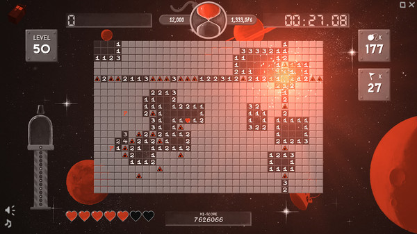

Le PC représente le coeur d'activité de Redfire. C'est par ce biais que le studio s'est fait connaître en lançant le Démineur en 2015, puis le point par lequel il reste connecté à ses fans les plus proches via Steam.
Le démineur a été historiquement distribué via Steam Greenlight, plateforme qui récompense les jeux les plus populaires de la communauté et leur donne même une vie commerciale.
On dénombre à ce jour 4 jeux PC répertoriés dans le catalogue ci-dessous :
| Démineur Fine Sweeper | |
|---|---|
| Année de sortie | Juin 2015 |
| Genres | Solitaire, Old School, Puzzle, Mouse Only, Logique |
| Prix | 9 euros |
| Description | En juin 2015, alors que Windows 10 était encore en beta, le problème était déjà constaté : les fans de démineur ne pouvaient plus jouer au Démineur classique sur Windows 10. Les fans ont travaillé assidument afin de porter le jeu sur Windows 10, et en ont profité pour écouter les suggestions de la communauté. De nouvelles fonctionnalités ont été ajoutées (détection radar des mines, appel à un ami, boss avec plusieurs étages, etc.), et fort de son succès le jeu a été commercialisé via Steam Greenlight. |
| Téléchargements | 1 040 129 |
| Lien | https://store.steampowered.com/app/367000/Fine_Sweeper/ |
| The Room 2 | |
|---|---|
| Année de sortie | Juillet 2016 |
| Genres | Puzzle, Mystère, Enigme, Point & Click, Atmosphérique |
| Prix | 1,80 euros |
| Description | En collaboration avec Fireproof Games, Redfire continue sur sa lancée et publie The Room 2. Il s'agit d'un remake du jeu sur Apple Store déja existant fin 2013 / début 2014. Afin de trouver la sortie de la salle ("room") dans laquelle le joueur se trouve, le joueur doit collecter et analyser les différents indices et messages laissés dans la salle, faire le lien entre eux et comprendre leur signification parfois indirecte. Le jeu a été notamment décrit comme excitant et stimulant par la communauté et a connu un grand succès. |
| Téléchargements | 16 218 279 |
| Lien | https://store.steampowered.com/app/425580/The_Room_Two/ |
| Glass Masquerade | |
|---|---|
| Année de sortie | Novembre 2016 |
| Genres | Puzzle, Relaxing, Indie, Atmosphérique |
| Prix | 1,08 euros |
| Description | En continuant dans sa lancée des jeux de puzzle et d'énigme, Redfire souhaite cette fois faire un jeu plus relaxant : Glass Masquerade. Contrairement à ce que son nom pourrait indiquer, les efforts artistiques graphiques et audio trahissent une véritable implication et souci continu des membres du studio de faire de ce jeu quelque chose de sérieux. Glass Masquerade permet de se reposer doucement et de penser calmement aux choses et d'apprécier l'harmonie qui se cache derrière l'enchevêtrement des choses. |
| Téléchargements | 1 111 820 514 |
| Lien | https://store.steampowered.com/app/511470/Glass_Masquerade/ |
| Superflight | |
|---|---|
| Année de sortie | Novembre 2017 |
| Genres | Indie, Flight, Relaxing, Atmosphérique |
| Prix | 40,17 euros |
| Description | Après Glass Masquerade, Redfire se retrouve dans l'ambiance relaxante de ses jeux et produit le jeu Superflight, avec le moteur Unity. Ce jeu sobre mais complexe illustre la perpétuelle marche en avant et le mouvement perpétuel. Le joueur ne fait qu'avancer mais il choisit sa direction. En passant près du bord mais sans le toucher, le joueur cherche continuellement de nouvelles sensations et vit l'intensité, la beauté, et la richesse du monde. Face à une chose à gérer dont il n'a pas le contrôle et ne connaît pas la cause précise, un joueur va-t-il pouvoir continuer à faire ce qu'il aime, ou bien finira-t-il par perdre la partie ? Ce jeu permet de se plonger et se transporter dans ces questions et est particulièrement relaxant et immersif. |
| Téléchargements | 20 112 006 |
| Lien | https://store.steampowered.com/app/732430/Superflight/ |